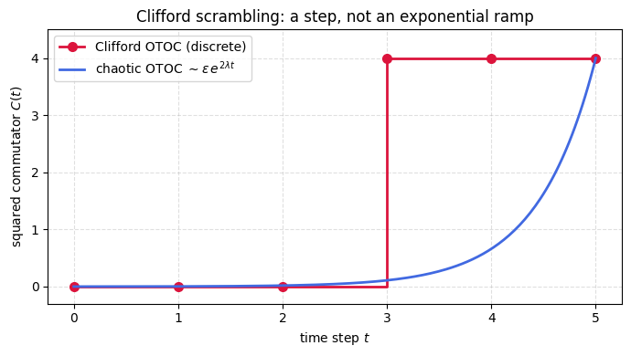

Scrambling is how a chaotic many-body system hides local information, spreading it until no small region can reveal what was put in. A standard way to watch this starts with a local operator and follows it in the Heisenberg picture, where the dynamics grow it into something with support far from its starting point. The out-of-time-order correlator compares that grown operator against a probe sitting somewhere else, and the squared commutator built from the correlator measures how strongly the two now fail to commute. In a chaotic system this squared commutator starts small and climbs exponentially before saturating, and the rate of that climb defines a quantum Lyapunov exponent that marks the onset of scrambling.
A Clifford circuit is an interesting test case because it genuinely spreads operators across the whole system while resting on a very rigid algebra. A Clifford unitary sends every Pauli operator to another Pauli operator, so an initially single-site Pauli \(W\) evolves into one Pauli string of possibly large support rather than a spread over many strings at once. Any two Pauli operators either commute or anticommute, with no intermediate possibility, so the squared commutator \(C(t)\) of the evolved \(W\) with a probe \(V\) can take only the value \(0\) when the two commute or \(4\) when they anticommute.
This turns the smooth ramp into a single step. While the operator front has not yet reached \(V\) the two commute and \(C(t)\) stays at zero, and the instant the front arrives they anticommute and \(C(t)\) jumps to four. No band of intermediate values is ever visited, so an exponential has nothing to populate and no Lyapunov exponent can be assigned, even though the operator does spread across the chain.
What makes this worth dwelling on is that the Clifford group is a unitary 3-design, reproducing the first three Haar moments exactly, which usually signals random-like behavior. The calculation proves the \(C(t) \in \{0,4\}\) dichotomy from the commutation algebra and then tracks the operator front numerically along a chain, setting the resulting step beside the smooth ramp of a chaotic correlator. Matching low Haar moments turns out to say nothing about whether operator growth carries the gradual character that dynamical chaos requires.
Motivation
Clifford circuits form exact unitary 3-designs, they reproduce the first three moments of the Haar measure. This makes them extremely useful for benchmarking and error correction. Yet they are efficiently classically simulable (Gottesman-Knill theorem) and therefore cannot exhibit true quantum chaos.
The OTOC \(C(t)\) quantifies scrambling: in chaotic systems, it grows exponentially as \(\sim e^{2\lambda t}\) before saturating. This exercise shows that Clifford evolution can only produce \(C(t) \in \{0, 4\}\), a discrete jump, never a smooth exponential. This is the fundamental obstruction to defining a Lyapunov exponent for Clifford dynamics.
Preliminaries / Toolbox
1. Pauli Group: The group generated by \(I, X, Y, Z\) with phase factors. Elements either commute \([A, B]=0\) or anticommute \(\{A, B\}=0\).
2. Clifford Group: The normalizer of the Pauli group. A unitary \(U\) is Clifford if \(U P U^\dagger\) is another Pauli operator \(P'\), for any Pauli \(P\).
3. Traces of Paulis: All non-identity Pauli operators are traceless, \(\mathrm{Tr}(P)=0\), and square to identity \(P^2=I\).
4. OTOC bounds: Because continuous scrambling \(\sim e^{\lambda t}\) implies smooth interpolation, a strictly binary-valued squared commutator means true (Lyapunov) chaos cannot occur.
Exercise
Let \(U\) be a Clifford unitary on \(N\) qubits. For single-qubit Paulis \(W\) and \(V\), define the squared commutator:
\[
C(t) = \frac{1}{D}\mathrm{Tr}\bigl([W(t), V]^\dagger [W(t), V]\bigr), \qquad W(t) = U^\dagger W U.
\]
Prove \(C(t) \in \{0, 4\}\) and conclude that Clifford circuits have no Lyapunov exponent.
Solution
Step 1: Clifford conjugation maps Paulis to Paulis
By definition, a Clifford unitary \(U\) normalizes the Pauli group: \(U^\dagger P U \in \mathcal{P}_N\) (up to a sign \(\pm 1, \pm i\)) for any Pauli \(P\). In particular, \(W(t) = U^\dagger W U\) is itself a Pauli operator (possibly on many qubits).
Step 2: Paulis either commute or anticommute
Any two elements of the Pauli group on \(N\) qubits either commute or anticommute, there is no intermediate possibility. This is because Pauli operators are tensor products of \(\{I, X, Y, Z\}\), and each pair of single-qubit Paulis either commutes (if they are equal or one is \(I\)) or anticommutes (if they are different non-identity Paulis). The full commutation is the product of the per-site factors.
Step 3: The two cases
Case 1:\([W(t), V] = 0\) (they commute).
\[
C(t) = 0.
\]
Case 2:\(\{W(t), V\} = 0\) (they anticommute). Then \([W(t), V] = 2W(t)V\).
Continuous exponential growth \(C(t) \sim \epsilon\, e^{2\lambda t}\) requires the OTOC to pass through intermediate values, impossible with the discrete set \(\{0, 4\}\). Clifford circuits scramble (the Pauli \(W\) can spread to a high-weight operator), but the scrambling is instantaneous once the light cone reaches \(V\), not gradual. This is why Cliffords are a 3-design (matching moments up to \(k=3\)) but not a good model of quantum chaos.
Symbolic Verification (SymPy)
Code
import sympy as sp# For Pauli operators P, Q:# Either [P,Q] = 0 (commute) or {P,Q} = 0 (anticommute)# C(P,Q) = <[P,Q]^dag[P,Q]> / D# If [P,Q]=0: C = 0 => F = 1# If {P,Q}=0: [P,Q] = 2PQ, C = 4*Tr(I)/D = 4 => F = -1print('Clifford OTOC values:')print(' Commuting Paulis: C = 0, F = 1')print(' Anticommuting Paulis: C = 4, F = -1')print()print('No intermediate values possible!')print('This binary behavior is an obstruction to Lyapunov chaos.')print('True chaos requires continuous F(t) ~ 1 - epsilon*e^{lambda*t}')print('but Clifford dynamics can only produce F in {-1, +1}.')
Clifford OTOC values:
Commuting Paulis: C = 0, F = 1
Anticommuting Paulis: C = 4, F = -1
No intermediate values possible!
This binary behavior is an obstruction to Lyapunov chaos.
True chaos requires continuous F(t) ~ 1 - epsilon*e^{lambda*t}
but Clifford dynamics can only produce F in {-1, +1}.
Numerical Verification
Code
%matplotlib inlineimport numpy as npimport matplotlib.pyplot as plt# A Clifford operator front spreads X(0) along a chain by a CNOT staircase.# We probe it against Z on a fixed site and track C(t) as the front advances.Nq =6Xg = np.array([[0, 1], [1, 0]], dtype=complex)Zg = np.diag([1, -1]).astype(complex)def single_site(op, site, n): M = np.array([[1]], dtype=complex)for j inrange(n): M = np.kron(M, op if j == site else np.eye(2, dtype=complex))return Mdef cnot(ctrl, tgt, n): dim =2**n U = np.zeros((dim, dim), dtype=complex)for b inrange(dim): bits = [(b >> (n -1- k)) &1for k inrange(n)]if bits[ctrl] ==1: bits[tgt] ^=1 nb =0for k inrange(n): nb = (nb <<1) | bits[k] U[nb, b] =1return Udim =2**NqW = single_site(Xg, 0, Nq) # operator to be spreadV = single_site(Zg, 3, Nq) # probe site (index 3)def squared_commutator(Wt, V): comm = Wt @ V - V @ Wtreturn (np.trace(comm.conj().T @ comm) / dim).real# Append each CNOT on the right so the staircase C01, C12, ... acts in time# order; in the Heisenberg picture W(t) = U^dag W U the X front then spreads# one site per step and reaches the probe V on site 3 at t = 3.U = np.eye(dim, dtype=complex)steps =list(range(Nq))C_clifford = [squared_commutator(W, V)]for t inrange(1, Nq): U = U @ cnot(t -1, t, Nq) # advance the operator front by one site Wt = U.conj().T @ W @ U C_clifford.append(squared_commutator(Wt, V))# Smooth exponential growth of a chaotic OTOC, for contrast.t_dense = np.linspace(0, Nq -1, 200)lam =0.9eps =4* np.exp(-2* lam * (Nq -1))C_chaotic = np.minimum(4.0, eps * np.exp(2* lam * t_dense))plt.figure(figsize=(7, 4))plt.step(steps, C_clifford, where='post', color='crimson', lw=2, marker='o', ms=7, label='Clifford OTOC (discrete)')plt.plot(t_dense, C_chaotic, color='royalblue', lw=2, label=r'chaotic OTOC $\sim \epsilon\,e^{2\lambda t}$')plt.yticks([0, 1, 2, 3, 4])plt.ylim(-0.3, 4.5)plt.xlabel('time step $t$')plt.ylabel(r'squared commutator $C(t)$')plt.title('Clifford scrambling: a step, not an exponential ramp')plt.legend()plt.grid(True, ls='--', alpha=0.4)plt.tight_layout()plt.show()

Why a step and not an exponent. A Clifford circuit keeps \(W(t)\) a single Pauli string, and two Pauli strings can only commute or anticommute. The squared commutator therefore jumps straight from \(0\) to \(4\) the moment the operator front reaches the probe, with no band of intermediate values for an exponential \(e^{2\lambda t}\) to populate. A genuine Lyapunov exponent needs \(W(t)\) to become a superposition of many Paulis, which requires the nonstabilizerness (magic) that Clifford dynamics lack.
Takeaway
For Clifford dynamics \(C(t)\) takes only the values \(0\) and \(4\), jumping the instant the operator light cone reaches \(V\) with no exponential ramp between. No Lyapunov exponent can be assigned, so matching the first three Haar moments does not by itself imply chaotic operator growth.
Code
import numpy as npfrom itertools import productI2 = np.eye(2, dtype=complex)sx = np.array([[0,1],[1,0]], dtype=complex)sy = np.array([[0,-1j],[1j,0]])sz = np.array([[1,0],[0,-1]], dtype=complex)H_gate = np.array([[1,1],[1,-1]], dtype=complex)/np.sqrt(2)S_gate = np.array([[1,0],[0,1j]], dtype=complex)CNOT = np.array([[1,0,0,0],[0,1,0,0],[0,0,0,1],[0,0,1,0]], dtype=complex)def random_clifford_2q(): U = np.eye(4, dtype=complex)for _ inrange(10): g = np.random.choice(3)if g ==0: U = np.kron(H_gate, I2) @ Uelif g ==1: U = np.kron(S_gate, I2) @ Uelse: U = CNOT @ Ureturn Upaulis_1q = [I2, sx, sy, sz]N, D =2, 4print("C(t) values for 200 random 2-qubit Cliffords:")C_values =set()for _ inrange(200): U = random_clifford_2q()for W_1q in [sx, sy, sz]:for V_1q in [sx, sy, sz]: W = np.kron(W_1q, I2) V = np.kron(I2, V_1q) Wt = U.conj().T @ W @ U comm = Wt @ V - V @ Wt C = np.trace(comm.conj().T @ comm).real / D C_values.add(round(C, 6))print(f" Distinct C values: {sorted(C_values)}")assert C_values == {0.0, 4.0} or C_values <= {0.0, 4.0}print(" C(t) ∈ {0, 4} confirmed: no Lyapunov exponent.")
C(t) values for 200 random 2-qubit Cliffords:
Distinct C values: [np.float64(0.0), np.float64(4.0)]
C(t) ∈ {0, 4} confirmed: no Lyapunov exponent.
Connections
The squared commutator here is the same out-of-time-ordered correlator used to diagnose scrambling in the dynamics notebooks. What changes is the dynamics. Because Clifford evolution maps Pauli operators to Pauli operators, the smooth exponential growth seen for chaotic Hamiltonians collapses to the two values 0 and 4, which is why a Clifford circuit scrambles in a coarse sense yet has no Lyapunov exponent.
References
Gottesman, The Heisenberg representation of quantum computers, arXiv preprint quant-ph/9807006 (1998).
Aaronson and Gottesman, Improved simulation of stabilizer circuits, Physical Review A (2004).
Webb, The Clifford group forms a unitary 3-design, Quantum Information and Computation (2016).
Płodzień, Information Scrambling, Quantum Chaos, and Haar-Random States, lecture notes (2025). arXiv:2511.14397